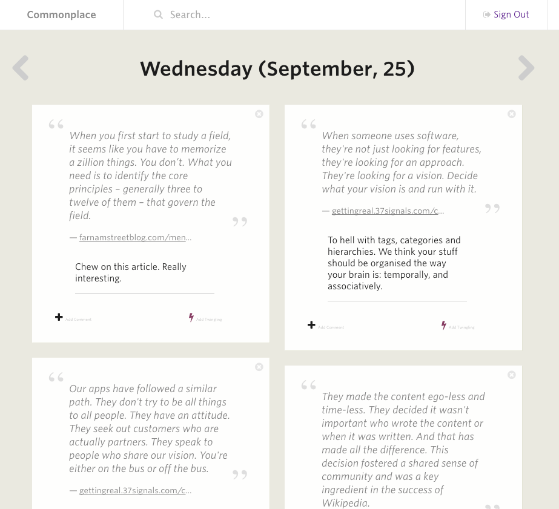
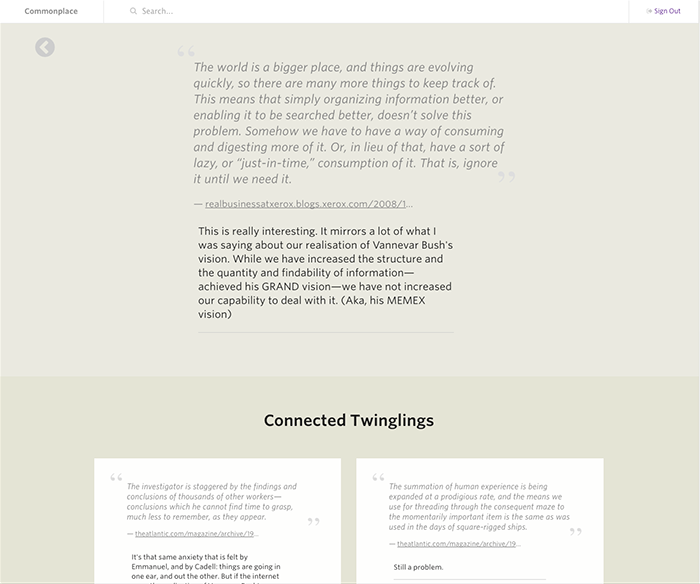

Twingl gives you a diary of everything that you save. Each day gets its own page, and it’s fully searchable.
Every highlight, comment and Twingling that you make automatically gets saved to your Twingl Journal, and sorted for you so that you never lose anything.

Explore the things you saved, add new notes and create Twinglings between things.

When you jump into a saved highlight, you get to see all of the stuff that you have Twingled it with; and all of the other highlights from the same article. It’s a little bit like having your own personal Wikipedia.
Those are the basics. This is an early access version of Twingl, and there are tons of missing features and bugs-a-plenty. Thank you from the bottom of our hearts for giving it a burn and if there’s anything at all you’d like to see; a nasty bug or just something confusing, please get in touch.